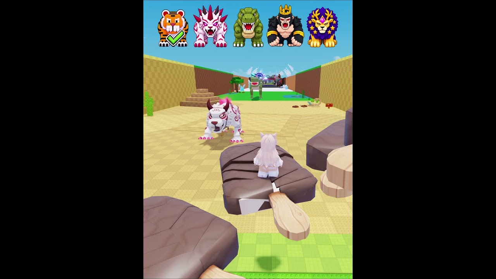

🎃 3 formule pentru ultimele zile de Halloween în Steal An Egg

⏳ Halloween Dimension din Steal An Egg se închide sâmbătă, 24 oct, pe la 17:00 (ora României). Spionul a găsit 3 shorts cu formule pe care le putem face până atunci. Numerele de mai jos sunt orientative (citite de Spionul pe 22 oct ~17:50), iar hook-urile sunt deduse din thumbnail, nu din vizionarea clipurilor.
1️⃣ Kity Karol, „Ice Cream ASMR Vs HUGE Steal An Egg Bosses! 😱”
- 📊 ~1,06M vizualizări, ~126K pe oră. Pe 23 oct la 08:44 (ora României), YouTube arăta 2.743.892 de vizualizări.
- 🍦 Formula: parkour ASMR, plus o bară cu boși care se bifează pe rând.
- 💡 Ideea VEXU: „CANDY CORN ASMR 🍬 vs HALLOWEEN (DISPARE SÂMBĂTĂ!)”, cu boșii reali pe care îi întâlnim în joc.
- 🔎 TikTok, de căutat în aplicație: „steal an egg asmr”, „roblox ice cream asmr”.
- ▶️ https://www.youtube.com/shorts/hsTmEiEomW4
2️⃣ Tigaru, „PTM in Steal An Egg”
- 📊 ~70K vizualizări, ~16,7K pe oră. Pe 23 oct la 08:44 (ora României), YouTube arăta 149.132 de vizualizări.
- 🏫 Formula: un skit cu ședința cu părinții (PTM, parent-teacher meeting), spus în episoade.
- 💡 Ideea VEXU: „Doamnă, fiul dumneavoastră n-a terminat quest-ul de Halloween… și Halloween-ul se închide sâmbătă!”
- 🔎 TikTok, de căutat în aplicație: „ptm roblox skit”, „steal an egg skit”.
- ▶️ https://www.youtube.com/shorts/RLauqlNsd7s
3️⃣ Robler, „POV Real Challenge of Kindness | Steal an Egg”
- 📊 ~278K vizualizări, ~27,8K pe oră. Pe 23 oct la 08:44 (ora României), YouTube arăta 438.070 de vizualizări.
- 💛 Formula: o provocare de bunătate.
- 💡 Ideea VEXU: „Ultimele ore de Halloween… îi dau unui noob TOT Candy Corn-ul meu.”
- 🔎 TikTok, de căutat în aplicație: „kindness challenge roblox”, „steal an egg kindness”.
- ▶️ https://www.youtube.com/shorts/pYW4o6bv0cs
Vezi și: Halloween Dimension e LIVE în Steal An Egg, toate detaliile eventului: https://pyromanc3r777.github.io/vexu-hq/posts/halloween-dimension-e-live-in-steal-an-egg-3-biomuri-echo-phantom-express-part-2-pe-24-oct.html
Follow pe TikTok @vexu_online și abonare pe YouTube la VEXU Online. Follow = Au ce bile! 💥